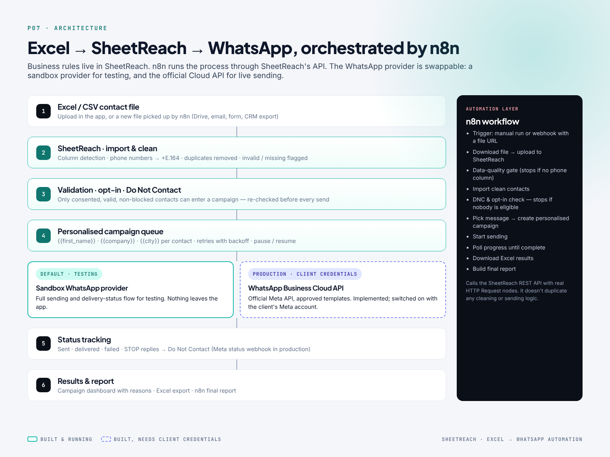

CASE STUDY
Many businesses keep customer and lead contacts in Excel. Before they can send a WhatsApp offer or update, someone has to:
- clean the phone numbers by hand (050 123 4567, +971-50-…, 00971…, blank cells, two numbers in one cell)
- remove the same person entered twice
- work out who agreed to receive WhatsApp messages and who asked not to be contacted
- copy and paste the same message with each person's name
- keep some record of who received it, who didn't, and why
It's repetitive, easy to get wrong, and risky. Messaging people who opted out can get a WhatsApp business number restricted.
SheetReach turns that into one guided flow: Contacts → Clean → Review → Message → Process → Results.
- Upload an Excel or CSV file. Columns are found automatically, even with title rows above the table.
- Clean: every number is converted to international format, duplicates are removed on the cleaned number, and invalid or missing numbers are flagged.
- Review: a business user sees the result in plain language before anything is saved. In the sample file: 1,250 rows → 1,092 ready, 41 duplicates, 15 invalid, 18 without a number, 12 on Do Not Contact and 72 that still need an opt-in.
- Message: write once with {{first_name}}, {{company}} and {{city}}, with a live preview and safe fallbacks for missing data.
- Process: a queue sends one message at a time. Temporary WhatsApp errors are retried and the campaign can be paused and resumed.
- Results: sent, delivered, failed, skipped and opted out, each with a reason, plus an Excel export.
A real, importable n8n workflow (portfolio/n8n/whatsapp-excel-automation.json) runs the whole process without anyone opening the app:
new contact file → upload & clean in SheetReach → data-quality gate → import clean contacts → Do Not Contact & opt-in check → pick message → create personalised campaign → start sending → wait & check progress (loop) → download Excel results → final report
n8n calls SheetReach's API with standard HTTP Request nodes. The rules stay in one place (SheetReach), and n8n handles triggers, sequencing and reporting. The workflow ends cleanly with a reason if the file has nothing new or nobody is eligible. It was executed successfully in n8n 2.42.4 against the running app.
SheetReach sends through a provider layer: - Sandbox WhatsApp provider (default, for testing): runs the full flow (acceptance, delivery updates, failures, retries and STOP replies) without contacting real numbers. Every campaign screen shows which provider is active. - WhatsApp Business Cloud API provider (production): built on Meta's official API, using approved message templates and the delivery-status webhook. It switches on only when the client's Meta credentials are configured. It was not run against Meta in this project.
No WhatsApp Web automation, browser bots, anti-ban tricks or rate-limit evasion are used.
| Part | What it is |
|---|---|
| Web app | React + TypeScript + Tailwind, in the same design system as the rest of the portfolio series |
| API & rules | Python FastAPI: import/cleaning, eligibility, campaign queue, reporting |
| Database | SQLite by default; Postgres through one setting |
| One provider layer: sandbox provider / official WhatsApp Cloud API provider | |
| Automation | n8n workflow over the REST API |
| Quality | 41 backend tests, a 33-step browser test of the full journey, and a real n8n execution |
What the workflow delivers, measured on a 1,250-row sample file with the sandbox provider: - A messy 1,250-row Excel file is cleaned and classified automatically, with a reason for every excluded row. - One message is personalised for 1,092 eligible contacts. The 72 without an opt-in are skipped and listed, not messaged. - The complete process runs end to end from n8n, in about 1 minute, and returns a report with the Excel results. - Opt-outs during a campaign are added to Do Not Contact and excluded from the next campaign.
Delivery figures come from the sandbox provider; live delivery depends on the client's WhatsApp account and audience.


